Dans cette vidéo, je vais vous montrer exactement comment faire du copy trading sur BingX, tutoriel complet pour débutants, étape par étape. En plus de cela, je vais également vous montrer comment choisir les bons traders à copier, comment éviter les plus grosses erreurs que font les débutants et qui leur coûtent de l'argent, et comment gérer correctement votre copy trading afin de ne pas vous faire liquider.
Interface & Outils : Interface web de l'échange de cryptomonnaies BingX (section Copy Trading).
Contenu textuel & Code : Profil du trader "golden faucet", graphiques de performance du ROI et du PnL cumulé sur 30 jours, indicateur de répartition des paires tradées (100% XRP), et boutons d'action "Follow" et "Copy".
Action / Démonstration : Navigation et présentation du profil d'un trader pour le tutoriel de copy trading.
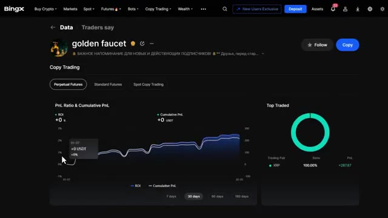
🔍 AgrandirDe plus, si vous utilisez mon lien dans la description, vous pouvez réclamer d'immenses bonus exclusifs, y compris jusqu'à 9 800 USDT de récompenses totales. Commençons donc. Première chose à faire, vous avez besoin d'un compte BingX. Si vous n'en avez pas encore, cliquez sur le lien dans la description ci-dessous. Cela vous mènera directement vers la page de bonus de bienvenue exclusive. Ce n'est qu'en utilisant mon lien que vous débloquerez le pack complet de bonus pour nouveaux utilisateurs que j'ai négocié spécifiquement pour ma communauté. Nous expliquerons en détail comment réclamer ces bonus correctement un peu plus tard. Pour
Interface & Outils : Interface web de l'échange de cryptomonnaies BingX.
Contenu textuel & Code : Offres promotionnelles, montants de bonus (9,800 USDT, 30 USDT, 500 USDT) et formulaire de création de compte.
Action / Démonstration : Présentation de la plateforme BingX et des bonus exclusifs disponibles via le lien de parrainage.
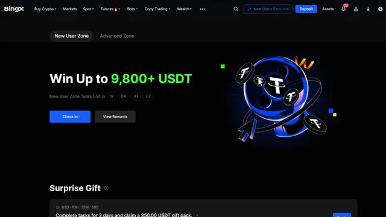
🔍 Agrandir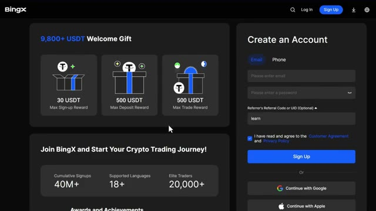
🔍 AgrandirMaintenant, concentrons-nous sur la configuration de tout de la bonne manière afin de ne rater aucune récompense. Très bien, une fois connecté à votre compte BingX, voici ce que vous devez faire. Allez dans la barre de navigation supérieure et passez votre curseur sur le copy trading. Comme vous pouvez le voir ici, BingX propose deux types de copy trading : le copy trading de futures et le copy trading de spot. Maintenant, la principale différence est simple. Le copy trading de futures utilise un effet de levier, ce qui signifie que vous pouvez amplifier vos gains, mais aussi vos pertes. Le copy trading de spot n'utilise pas d'effet de levier, il est donc plus sûr, mais les rendements sont généralement plus faibles.
Interface & Outils : Interface web de l'échangeur de cryptomonnaies BingX (page d'accueil et section Copy Trading / Leaderboard).
Contenu textuel & Code : Bannières promotionnelles de BingX, tickers de prix des cryptomonnaies en bas de page, et tableaux de classement des traders avec leurs statistiques de performance (ROI, PnL sur 30 jours, ratio de Sharpe, etc.).
Action / Démonstration : Navigation sur la plateforme BingX pour accéder aux fonctionnalités de copy trading et consulter le classement des meilleurs traders.
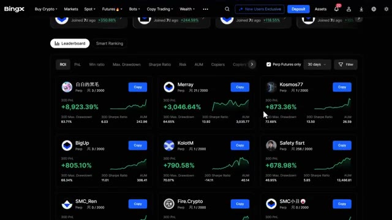
🔍 AgrandirPour les débutants, je recommande en fait de commencer par le copy trading au comptant pour vous familiariser avec le fonctionnement du système avant de passer aux contrats à terme à effet de levier. Pour ce tutoriel, je vais vous montrer les deux en commençant par le copy trading de contrats à terme puisque c'est là que se déroule l'essentiel de l'action. Cliquez sur le copy trading de contrats à terme pour accéder au tableau de bord.
Interface & Outils : BingX (Plateforme d'échange crypto - Copy Trading Plaza)
Contenu textuel & Code : Menu de navigation supérieur (Buy Crypto, Markets, Spot, Futures, Bots, Copy Trading, Wealth), sections 'Elite Traders x AI Strategy Masters' (2 000 ways to trade), 'Futures Listing' (99 trading pairs), et sélecteurs de filtres 'Futures' / 'Spot'.
Action / Démonstration : Le curseur de la souris clique sur l'onglet 'Spot' du copy trading pour basculer de l'affichage des contrats à terme vers le marché au comptant.
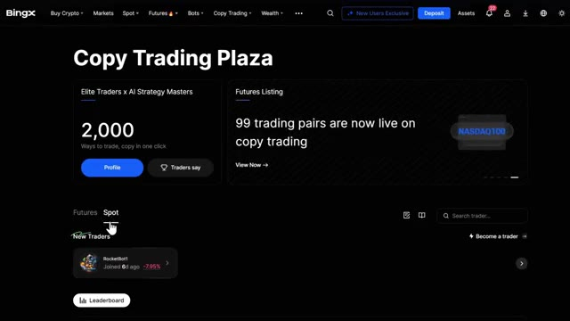
🔍 AgrandirUne fois que vous êtes dans le tableau de bord du copy trading de contrats à terme, vous verrez plusieurs sections. Maintenant, écoutez, cela peut sembler un peu impressionnant au début, mais je vais décortiquer tout ce que vous devez savoir. En haut, vous pouvez voir la section de votre profil, qui montre vos performances actuelles en copy trading, vos capitaux propres et vos profits réalisés. En dessous, vous avez la section des nouveaux traders, qui met en avant les traders qui ont récemment rejoint la plateforme et qui affichent de solides performances initiales.
Interface & Outils : Plateforme d'échange de cryptomonnaies BingX (section Copy Trading).
Contenu textuel & Code : Statistiques de traders incluant les pourcentages de PnL sur 30 jours (+590.03%, +532.42%, etc.), les graphiques de performance miniatures, et les boutons de copie.
Action / Démonstration : Navigation et présentation des différents profils de traders disponibles pour le copy trading de futures.
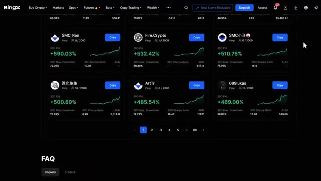
🔍 AgrandirEnsuite, vous avez le classement, qui est l'endroit où vous passerez le plus clair de votre temps. C'est ici que vous pouvez voir tous les traders les plus performants classés selon différents indicateurs. Et enfin, vous avez le Classement Intelligent, qui utilise l'algorithme de BingX pour catégoriser les traders en fonction de schémas de performance spécifiques. Plongeons d'abord dans le classement, car c'est là que vous trouverez les traders que vous voulez copier.
Interface & Outils : Site web / Plateforme d'échange de cryptomonnaies BingX (Section Copy Trading / Classement).
Contenu textuel & Code : Cartes de traders affichant divers indicateurs de performance sur 30 jours : ROI, PnL (ex: +8,923.39%, +3,046.64%), ratio de Sharpe, Max Drawdown et AUM. Filtres par ROI, PnL, Win ratio, etc., et options de tri (Perp Futures only, 30 days).
Action / Démonstration : Présentation et exploration de la page de classement des traders du copy trading sur BingX pour évaluer leurs performances.
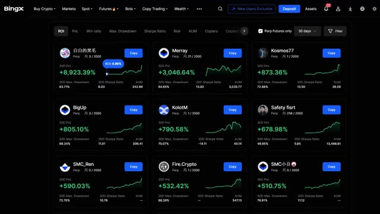
🔍 AgrandirSous le classement, vous pouvez voir le profil de chaque trader avec des informations clés, leur nom, le type de marchés qu'ils tradent, le nombre de followers qu'ils ont, leur P&L sur 30 jours, c'est-à-dire le profit et la perte, leur prélèvement maximal sur 30 jours, qui montre la plus grande perte qu'ils ont enregistrée, leur ratio de Sharpe, qui mesure les rendements ajustés au risque, et leur AUM, qui signifie actifs sous gestion, en gros, la quantité d'argent que les gens leur confient. Maintenant, c'est là que ça devient puissant. Vous pouvez trier ces traders selon plusieurs métriques. Vous pouvez trier par P&L pour voir qui gagne
Interface & Outils : Interface de la plateforme d'échange BingX (section Copy Trading / Leaderboard).
Contenu textuel & Code : Cartes de profils de traders avec métriques de performance sur 30 jours (ex: P&L en pourcentage, graphiques de performance miniatures, Max. Drawdown, Sharpe Ratio, AUM, nombre de abonnés/copieurs) et boutons "Copy".
Action / Démonstration : Présentation des profils de traders et des indicateurs de performance clés visibles sous le classement de la plateforme.
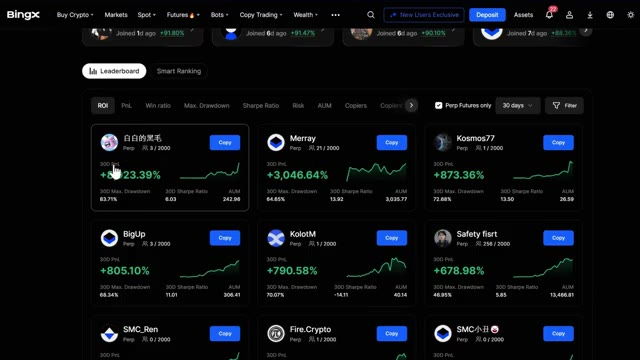
🔍 Agrandirle plus d'argent, le ratio de gains pour voir qui a le pourcentage le plus élevé de transactions gagnantes, le prélèvement pour trouver les traders avec le plus faible risque, le ratio Sharpe pour trouver les meilleurs rendements ajustés au risque, au niveau de risque AUM pour voir qui gère le plus de capital, les copieurs pour voir qui sont les copieurs les plus populaires, les gains pour voir combien d'argent leurs abonnés gagnent réellement, le capital propre qui est le capital du trader et les abonnés, vous pouvez également filtrer pour afficher uniquement les traders de contrats futures perpétuels si c'est ce qui vous intéresse, maintenant BingX a une fonctionnalité vraiment utile appelée le classement intelligent qui
Interface & Outils : Interface web de l'échange de cryptomonnaies BingX (section Copy Trading).
Contenu textuel & Code : Tableau de bord du copy trading affichant les performances des traders (PnL sur 30 jours, ratio de Sharpe, drawdown maximum, AUM). Le curseur clique sur l'onglet de tri "Sharpe Ratio".
Action / Démonstration : Navigation et tri des meilleurs traders selon le ratio de Sharpe pour évaluer les rendements ajustés au risque.
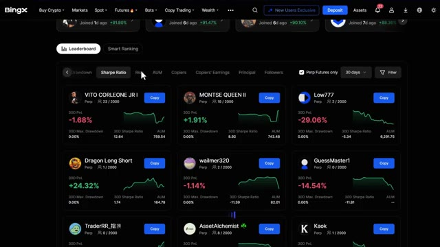
🔍 Agrandircatégorise les traders en quatre groupes : un retour sur investissement fulgurant qui montre des traders avec des rendements en augmentation rapide, les traders tendance qui gagnent en popularité rapidement, les traders conservateurs qui se concentrent sur des gains constants à faible risque, et les étoiles montantes qui sont plus récents mais affichent un fort potentiel. C'est super utile parce que cela vous permet de trouver rapidement des traders qui correspondent à votre tolérance au risque et à vos objectifs d'investissement.
Interface & Outils : Présentation ou face-caméra explicatif du trader sans interface logicielle partagée.
Contenu textuel & Code : Explications orales des stratégies et mise en contexte méthodologique du marché.
Action / Démonstration : Explications face caméra et analyse conceptuelle des marchés.
Si vous êtes frileux face au risque ou que vous débutez, je vous recommande vivement de consulter la section des traders conservateurs. Ces traders privilégient la préservation du capital et une croissance régulière plutôt que des gains massifs, ce qui signifie un risque de liquidation plus faible. Examinons maintenant rapidement le copy trading au comptant. Cliquez sur la section au comptant dans le menu de copy trading. Vous y verrez des traders qui négocient sans effet de levier, ce qui signifie qu'ils achètent et détiennent des cryptomonnaies sans emprunter de fonds. C'est beaucoup plus sûr que le trading de futures parce que vous ne pouvez pas être liquidé.
Interface & Outils : Site web / Plateforme de courtage crypto BingX (section Copy Trading / Conservative Traders)
Contenu textuel & Code : Métriques de performance de traders conservateurs : PnL sur 30 jours (ex: +39.46%, +35.24%, +11.65%, etc.), Max Drawdown, Ratio de Sharpe, AUM (actifs sous gestion), et courbes de rendement.
Action / Démonstration : Navigation et présentation de la liste des traders conservateurs pour le copy trading sur BingX.
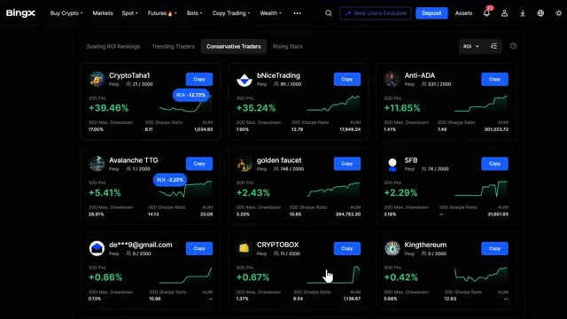
🔍 AgrandirLe pire qui puisse arriver est que la valeur de votre portefeuille diminue si les prix baissent. Dans le classement au comptant, vous verrez les abonnés. Cela montre combien de personnes copient ce trader, le profit et la perte, ce sont leurs gains ou pertes totaux, le taux de réussite indique le pourcentage de transactions rentables, le PnL cumulé est leur profit total au fil du temps, et les jours de copy trading, cela montre depuis combien de temps ils sont actifs, c'est un excellent point de départ si vous voulez copier des traders sans le risque de l'effet de levier, vous pouvez apprendre comment fonctionne le copy trading et voir différentes stratégies.
Interface & Outils : Échange de cryptomonnaies BingX (section Copy Trading).
Contenu textuel & Code : Cartes de profil de traders avec le nombre d'abonnés (ex: 1000/1000), le profit et la perte en pourcentage (ex: +49.47%, -9.86%, +32.03%), le taux de réussite (Win Ratio), le PnL cumulé et le nombre de jours de copy trading.
Action / Démonstration : Navigation et présentation des différents traders disponibles dans le classement au comptant (Spot) pour le copy trading.
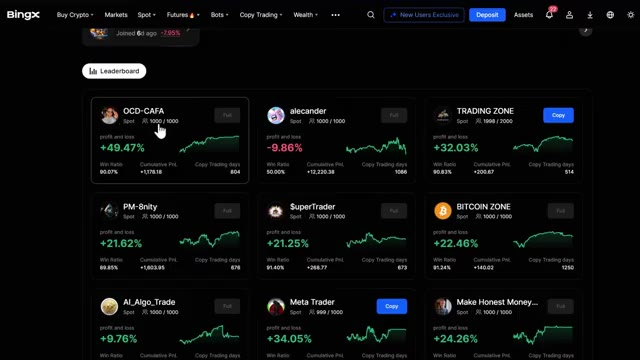
🔍 Agrandirs'entraîner et gagner en confiance avant de passer aux contrats à terme, mais avant de continuer, assurez-vous d'utiliser le lien ci-dessous lors de votre inscription. De faux sites d'arnaque sont partout en ligne. Mon lien ci-dessous vous garantit d'être sur la vraie plateforme BingX, assure la sécurité de vos fonds, vous permet de débloquer le pack de bonus de bienvenue et aide à soutenir la chaîne sans aucun coût supplémentaire pour vous. Très bien, disons donc que vous avez trouvé un trader qui vous intéresse. Cliquez sur son profil et vous verrez une tonne d'informations détaillées.
Interface & Outils : Site web de l'échange de cryptomonnaies BingX
Contenu textuel & Code : Formulaire d'inscription, statistiques de la plateforme (40M+ utilisateurs, langues supportées, etc.) et section des tâches pour nouveaux utilisateurs avec récompenses en USDT.
Action / Démonstration : Présentation de la plateforme d'échange BingX et des étapes d'inscription pour les nouveaux utilisateurs.
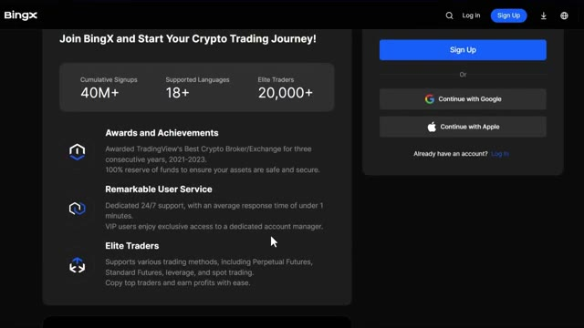
🔍 Agrandir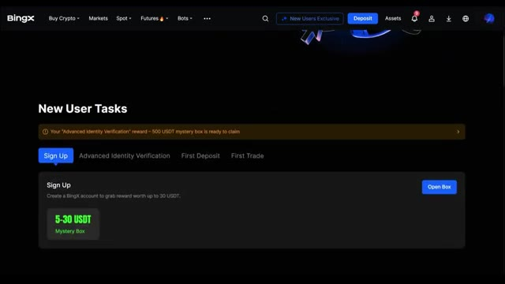
🔍 AgrandirLet me break down what actually matters. First, you'll see their PNL ratio and top traded coins. This shows you which cryptocurrencies they focus on. I personally prefer traders who stick to major coins like Bitcoin and Ethereum because they're less volatile and less risky than low-cap altcoins. Under the Overview tab, you can see the Trader Profitability section, which shows their ROI and profit for the last 30 days.
Interface & Outils : Plateforme d'échange de cryptomonnaies BingX (interface de Copy Trading).
Contenu textuel & Code : Graphique de PnL Ratio & Cumulative PnL affichant un ROI de +2,43 % et un PnL cumulé de +215,37 USDT, ainsi qu'un graphique en camembert montrant 100 % de XRP dans la section Top Traded.
Action / Démonstration : Présentation et analyse des métriques de performance d'un trader (ratio PnL et cryptomonnaies principales).
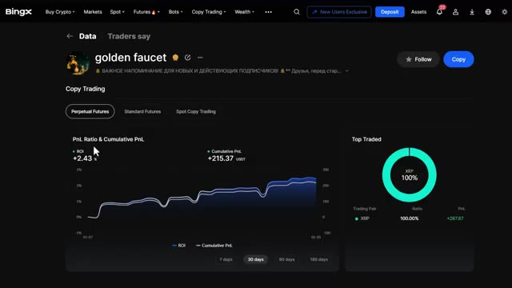
🔍 AgrandirCherchez une croissance constante, pas seulement un énorme pic unique. Une courbe ascendante régulière est bien meilleure que des variations sauvages. Ensuite, vous verrez leur ratio de gains, qui est le pourcentage de transactions qui ont gagné de l'argent. Au moins 50 % à 60 % est l'idéal. Tout ce qui est en dessous de 40 % est assez risqué. Vous verrez également leur capital, qui est leur propre capital, le total des positions, les positions gagnantes, les positions perdantes, le profit moyen, la perte moyenne et le ratio PNL.
Interface & Outils : Interface web de l'exchange de cryptomonnaies BingX (section Copier Trading / Overview).
Contenu textuel & Code : Métriques de performance de trading : 30D win ratio (100%), 3D Profit (+215.37 USDT), Principal, Total positions (3902), Win positions (3901), Loss positions (1), Average profit, Average loss, PnL ratio, Trader Activities, Copier Performance & Scale (+15,873.53 de gains pour les copieurs, AUM 364,782.30 USDT), et Trader Risk (30D max drawdown 3.20%, Sharpe ratio 10.65). Une infobulle explicative s'affiche sur le ratio de gains 30D.
Action / Démonstration : Consultation et survol des métriques de rentabilité et du ratio de gains d'un trader sur la plateforme BingX.
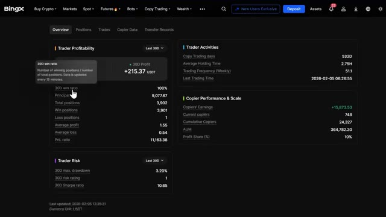
🔍 AgrandirVoici ce que cela signifie. La position totale montre combien de trades ils ont ouverts. Les positions gagnantes et perdantes détaillent combien étaient rentables par rapport à celles qui ne l'étaient pas. Le profit moyen et la perte moyenne vous montrent la taille typique de leurs gains et de leurs pertes. Si leur profit moyen est nettement supérieur à leur perte moyenne, c'est un bon signe.
Interface & Outils : Interface web de l'échange de cryptomonnaies BingX (section Copy Trading).
Contenu textuel & Code : Métriques affichées : ROI 30D (+2.43 %), Profit 30D (+215.37 USDT), taux de réussite 30D (100 %), Principal (9,077.67), positions totales (3,902), positions gagnantes (3,901), positions perdantes (1), profit moyen (1.55), perte moyenne (0.54), ratio PnL (11,163.38), jours de copy trading (532D), temps de détention moyen (2.75H), fréquence de trading hebdomadaire (51.1), gains des copieurs (+15,873.53), copieurs actuels (748), AUM (364,782.30), part des profits (10 %), drawdown max 30D (3.20%), ratio de Sharpe 30D (10.65).
Action / Démonstration : Présentation et explication détaillée des métriques de performance et de risque d'un trader sur une plateforme de copy trading.
Cela signifie qu'ils réduisent leurs pertes rapidement et laissent courir leurs gains. Vous pouvez également voir l'activité des traders, qui montre leurs statistiques de trading, telles que le nombre de jours depuis qu'ils ont commencé le copy trading, le temps de détention moyen d'un trade, la fréquence des trades par semaine, et leurs derniers trades. Maintenant, sous le risque du trader, vous verrez trois métriques essentielles : le prélèvement maximal, l'évaluation du risque et le ratio de Sharpe. Le prélèvement maximal montre la plus grande perte subie par le trader depuis son capital maximum. L'évaluation du risque est l'évaluation globale par BingX du niveau de risque du trader. Le niveau de risque de 1 à 9 est
Interface & Outils : Plateforme d'échange de cryptomonnaies BingX (Interface de Copy Trading)
Contenu textuel & Code : Statistiques de trading : Trader Profitability (30D ROI +2.43%, 30D Profit +215.37 USDT, 30D win ratio 100%, PnL ratio 11,163.38), Copy Trading days (532D), Average Holding Time (2.75H), Trading Frequency (51.1), Copier Performance & Scale (AUM 364,782.30 USDT, 748 current copiers), Trader Risk (30D max. drawdown 3.20%, 30D Sharpe ratio 10.65).
Action / Démonstration : Consultation et survol des métriques de performance et de risque d'un trader professionnel sur BingX.
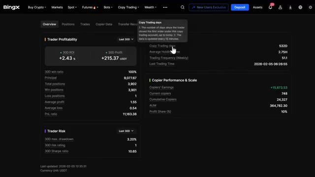
🔍 Agrandirclassé selon la perte pendant la période statistique. Plus le chiffre est élevé, plus le risque est élevé. Et ces données sont mises à jour toutes les 30 minutes. Ensuite, vous avez le ratio de Sharpe, qui est une mesure de performance clé pour évaluer les rendements ajustés au risque. En gros, un ratio de Sharpe plus élevé signifie que le trader gagne un rendement excédentaire plus important par unité de volatilité ou de risque qu'il prend.
Interface & Outils : Interface web de l'exchange BingX (section Copy Trading / Overview).
Contenu textuel & Code : Statistiques de trading sur 30 jours (ROI +2.43%, Profit +215.37 USDT, win ratio 100%, 3D risk rating 1, 3D Sharpe ratio 10.65) et encadré explicatif du niveau de risque.
Action / Démonstration : Le présentateur survole ou pointe la section des métriques de risque pour expliquer le mode de calcul et la mise à jour des données.
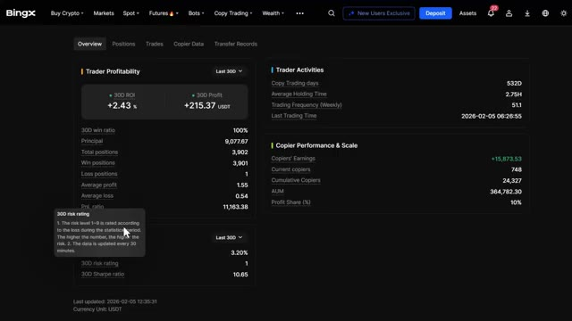
🔍 AgrandirUn ratio de Sharpe supérieur à 1,0 est considéré comme bon, supérieur à 2,0 comme très bon, et supérieur à 3,0 comme excellent. Cela vous indique si les rendements du trader valent le risque qu'il prend, et pas seulement le montant des bénéfices qu'il réalise. Sur le côté droit, vous verrez la performance et l'échelle du copieur. En dessous, vous pouvez voir les gains du copieur, ce qui est absolument crucial.
Interface & Outils : Interface web de l'échange de cryptomonnaies BingX (section Copy Trading / Overview).
Contenu textuel & Code : Métriques de trading sur 30 jours : Trader Profitability (3D ROI de +2,43 %, 3D Profit de +215,37 USDT, ratio de gain de 100 %, 3 902 positions totales, 3 901 positions gagnantes, 1 position perdante), Trader Risk (3D max. drawdown de 3,20 %, 3D risk rating de 1, 3D Sharpe ratio de 10,35), Trader Activities et Copier Performance & Scale (Copiers' Earnings de +15 873,53, 748 copieurs actuels, AUM de 364 782,30 USDT).
Action / Démonstration : Analyse et présentation des métriques de performance et de risque d'un trader sur BingX, illustrant notamment le ratio de Sharpe.
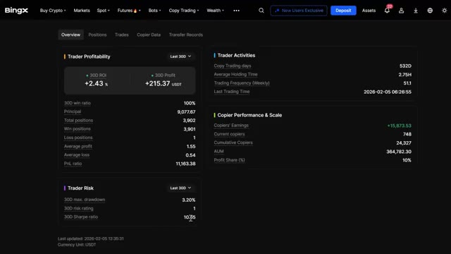
🔍 AgrandirCela montre combien d'argent leurs copieurs actuels rapportent réellement. Si ce nombre est négatif ou à peine positif, c'est un énorme signal d'alarme. Évitez-les immédiatement. Vous pouvez également voir les copieurs actuels, les copieurs cumulés et les actifs sous gestion, ou AUM, avec le ratio de partage des profits. Le ratio de partage des profits se situe généralement entre 10 et 20 pour cent, ce qui signifie que si vous réalisez 100 $ de profit, le trader garde 10 $ à 20 $ et vous gardez le reste.
Interface & Outils : Interface web de la plateforme de trading BingX (section Copy Trading).
Contenu textuel & Code : Métriques de copy trading : 30D ROI (+2.43 %), 30D Profit (+215.37 USDT), Copiers' Earnings (+15,873.53), Current copiers (748), Cumulative Copiers (24,327), AUM (364,782.30), Profit Share (10%), et score de risque.
Action / Démonstration : Analyse des statistiques de performance et des indicateurs de rentabilité des copieurs sur la plateforme.
Sous les positions actives, vous pouvez voir leurs transactions ouvertes actuelles. Sous les données des copieurs, vous pouvez voir les noms des personnes qui les copient, depuis combien de jours elles copient, le montant de leurs actifs copiés, et leur P&L. Cela vous donne une vraie preuve sociale indiquant si ce trader fait réellement gagner de l'argent à ses abonnés. Maintenant, regardez, c'est presque la même chose avec le copy trading au comptant, mais pour le comptant, vous verrez principalement le ROI, le PNL cumulé, le taux de réussite, le total des transactions et les actifs du compte. Vous pouvez également voir leur fréquence de trading et leurs jours de trading, ce qui vous indique à quel point ils sont actifs. Prenez votre temps ici. Ne choisissez pas seulement le trader avec le
Interface & Outils : Plateforme d'échange de cryptomonnaies BingX (interface web de Copy Trading).
Contenu textuel & Code : Tableau des données des copieurs affichant les colonnes Copiers (noms/emails masqués), Copy Days (nombre de jours de copie), Copy Assets (en USDT) et P&L (en USDT).
Action / Démonstration : Présentation et explication de la liste des investisseurs qui copient les trades et de leurs performances financières.
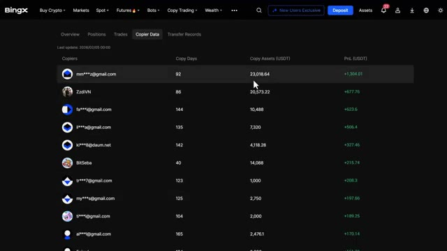
🔍 Agrandirle meilleur retour sur investissement. Vous voulez de la régularité, un bon ratio de gagnants, des gains positifs pour les copieurs et une stratégie qui correspond à votre tolérance au risque. Maintenant, avant de continuer, assurez-vous de consulter le centre des récompenses après vous être inscrit en utilisant mon lien dans la description. Ici, vous pouvez réclamer mon pack de bonus de bienvenue exclusif mentionné plus tôt, incluant une récompense maximale d'inscription de 30 USDT, jusqu'à 500 USDT pour la vérification d'identité avancée, une récompense maximale de dépôt de 500 USDT, une récompense maximale de trading de 500 USDT, et du trading exclusif.
Interface & Outils : Échange de cryptomonnaies BingX (sections Copy Trading et Rewards Center).
Contenu textuel & Code : Graphique de ROI (+32.03%), onglets de performance (7 jours, 30 jours, 90 jours), bons de position (50 USDT, 100 USDT, 200 USDT) et tâches de vérification d'identité.
Action / Démonstration : Navigation sur la plateforme BingX pour montrer les performances de copy trading et les récompenses disponibles pour les nouveaux utilisateurs.
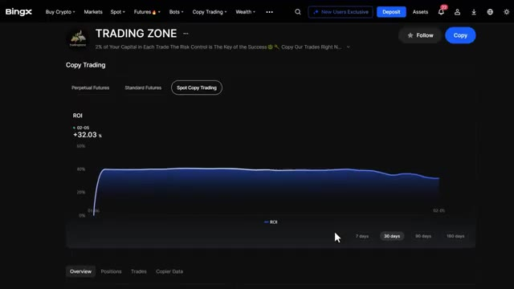
🔍 Agrandir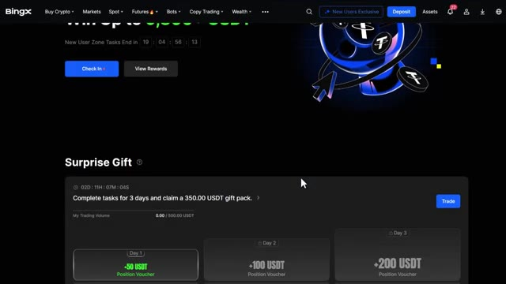
🔍 Agrandir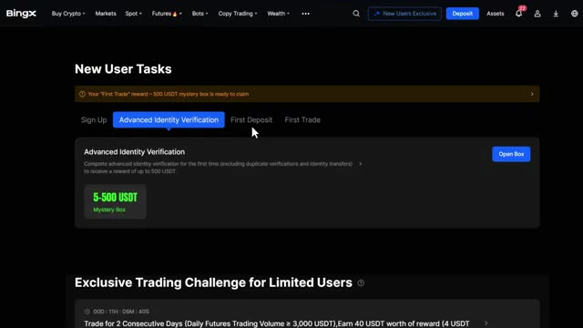
🔍 Agrandirdes défis permettant de gagner de 5 USDT pour 5 000 de volume de trading jusqu'à 6 000 USDT pour 70 millions de volume de trading sur les contrats futures. Cela représente jusqu'à 9 800 USDT de récompenses totales, disponibles uniquement via mon lien. Donc, ne manquez surtout pas ça. Très bien, une fois que vous avez trouvé un trader qui vous plaît, cliquez sur le bouton de copie sur son profil. BingX propose deux modes de copie : le mode à ratio fixe et le mode à montant fixe. Le premier est le mode à ratio fixe. C'est lorsque vous copiez un pourcentage de votre portefeuille qui correspond à celui du trader principal.
Interface & Outils : Échange de cryptomonnaies BingX (interface web).
Contenu textuel & Code : Paliers de volume futures, récompenses en bons bonus USDT, statistiques de copy trading, ROI, répartition des actifs tradés.
Action / Démonstration : Navigation sur la plateforme BingX entre les pages de tâches futures, le classement des copy traders et la configuration d'un investissement de copy trading.
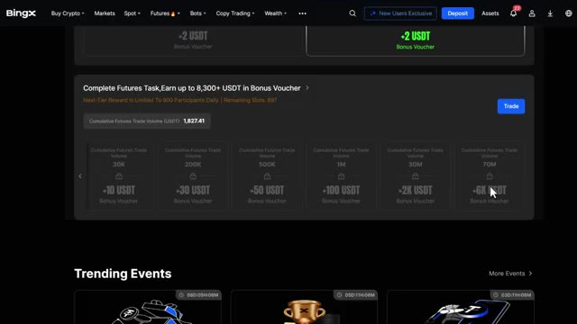
🔍 Agrandir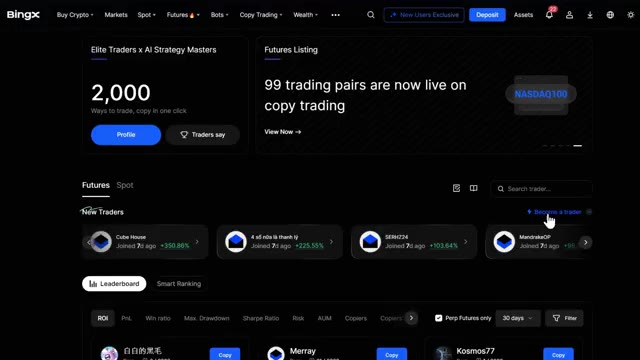
🔍 Agrandir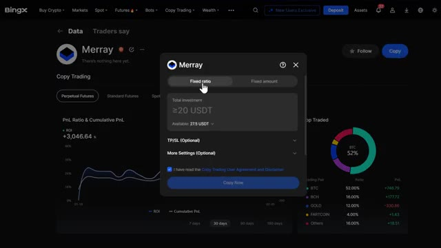
🔍 Agrandirallocation. Donc s'ils utilisent 5% de leur capital sur un trade, vous utilisez 5% du vôtre. Ce mode est idéal si vous souhaitez reproduire exactement la stratégie et le profil de risque du trader. Le deuxième est le mode montant fixe. C'est là que vous copiez un montant fixe en dollars par trade. Par exemple, si vous définissez 10 $ pour chaque trade que le trader principal ouvre, vous ouvrez avec 10 $. Cela vous donne plus de contrôle sur le montant que vous risquez par trade, peu importe ce que le trader utilise. C'est préférable si vous souhaitez limiter votre exposition par trade. Pour ce tutoriel, je vais
Interface & Outils : Échange de cryptomonnaies BingX (Interface Web - Copy Trading)
Contenu textuel & Code : Fenêtre de paramétrage du copy trading avec les options "Fixed ratio" et "Fixed amount", un champ d'investissement total (minimum 20 USDT, solde disponible de 27,5 USDT), des options de Take Profit / Stop Loss optionnelles, ainsi que des graphiques de performance (ROI de +3,046.4% et répartition des actifs tradés).
Action / Démonstration : Configuration et sélection des modes de répartition de capital (ratio fixe vs montant fixe) pour copier un trader sur BingX.
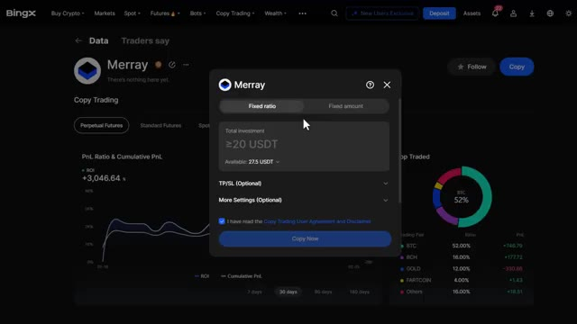
🔍 Agrandirutilisez le mode montant fixe puisque c'est plus simple et que cela vous donne plus de contrôle. Maintenant, dans cette section, vous pouvez définir vos paramètres de copy trading. Le premier est la marge par ordre. C'est le montant que vous investirez dans chaque trade individuel. Par exemple, si vous définissez 20 dollars, chaque fois que le trader ouvre une position, vous en ouvrirez une avec 20 dollars. Le suivant est l'investissement total.
Interface & Outils : BingX (Plateforme d'échange de cryptomonnaies)
Contenu textuel & Code : Paramètres de copy trading avec les options "Fixed ratio" et "Fixed amount", champs "Margin per order" (≥5 USDT), "Total investment" (≥20 USDT), solde disponible de 27.5 USDT, options TP/SL et bouton "Copy Now".
Action / Démonstration : Configuration des paramètres de copy trading en mode montant fixe.
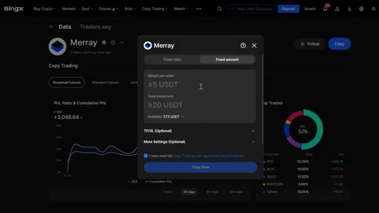
🔍 AgrandirIl s'agit du montant maximum que vous êtes prêt à allouer pour copier ce trader. Par exemple, si vous définissez 500 $, une fois que vos positions actives auront atteint 500 $, aucun nouveau trade ne sera copié jusqu'à ce que certains se ferment. Ne placez pas tous vos fonds sur un seul trader. La diversification est essentielle. Je recommande de répartir votre capital entre deux ou trois traders ayant des stratégies différentes.
Interface & Outils : Plateforme d'échange de cryptomonnaies BingX (section Copy Trading).
Contenu textuel & Code : Paramètres de configuration : mode 'Fixed amount', 'Margin per order' (20 USDT), 'Total investment' (27,5 USDT), options 'TP/SL' et 'More Settings', ainsi qu'une case à cocher pour l'accord d'utilisation.
Action / Démonstration : Configuration des paramètres de gestion du risque et du montant d'investissement pour copier automatiquement le trader.
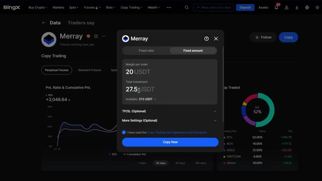
🔍 AgrandirEnsuite, vous pouvez activer le take profit et le stop loss pour vos copies de trades. Vous pouvez définir un take profit dans lequel vous définirez un pourcentage ou un montant en dollars où votre position se fermera automatiquement pour verrouiller les gains. Par exemple, si vous définissez un take profit de 20 % et que votre trade monte de 20 %, il se fermera automatiquement.
Interface & Outils : Interface de l'échange de cryptomonnaies BingX (section Copy Trading).
Contenu textuel & Code : Paramètres de Take Profit (TP/SL) avec champs de saisie pour définir un pourcentage ou un montant en USDT, options "Continue copying after taking profit", et bouton de confirmation "Copy Now".
Action / Démonstration : Configuration des paramètres de gestion des risques (Take Profit et Stop Loss) pour copier un trader (Merray).
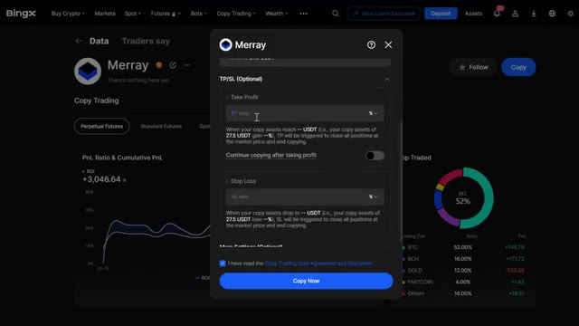
🔍 AgrandirVous pouvez également activer la copie continue après avoir pris des bénéfices. Lorsque le prix ou le ratio de déclenchement du take profit est atteint, le système fermera toutes vos positions et transférera automatiquement les bénéfices sur votre compte de contrats futures perpétuels. Vos fonds restants continueront d'être utilisés pour copier le trader, à moins qu'au cas où ils ne tombent en dessous du seuil de copie minimal, la copie sera alors annulée.
Interface & Outils : Échange de crypto-monnaies BingX (interface web).
Contenu textuel & Code : Fenêtre modale de paramétrage du "Copy Trading" avec les champs "Take Profit" (réglé sur 20%), le bouton bascule pour "Continue copying after taking profit", et un message d'erreur en haut ("Failed to enable. Set profit must exceed 10 USDT").
Action / Démonstration : Configuration des options de Take Profit et de copie continue pour un trader ("Merray") sur BingX.
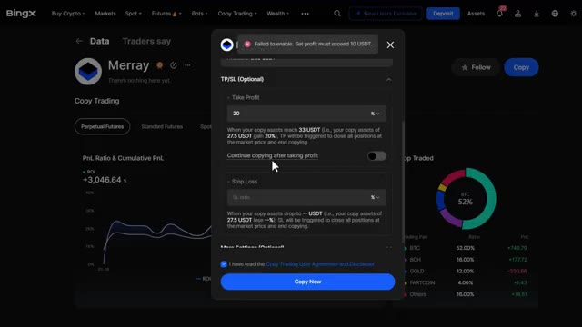
🔍 AgrandirVient ensuite le stop loss. C'est ici que vous pouvez définir un pourcentage ou un montant en dollars où votre position se fermera automatiquement pour limiter les pertes. Par exemple, si vous définissez un stop loss de 10 % et que votre trade chute de 10 %, il se fermera automatiquement pour protéger votre capital. Je recommande vivement de définir un stop loss. C'est votre filet de sécurité contre les pertes majeures.
Interface & Outils : Plateforme de trading BingX (section Copy Trading).
Contenu textuel & Code : Paramètres TP/SL (Take Profit réglé à 20 %, champ de Stop Loss vide avec l'option SL ratio en pourcentage).
Action / Démonstration : Configuration des options de gestion des risques (Take Profit et Stop Loss) pour le copy trading d'un trader (Merray).
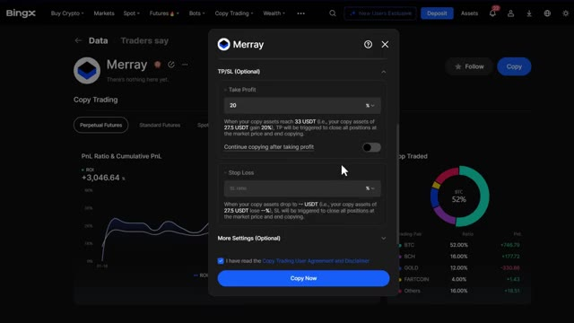
🔍 AgrandirCliquez sur plus de paramètres pour accéder aux options avancées. Ici, vous pouvez voir le mode de copie pour les positions existantes. Vous y verrez trois options. Copier toutes les positions. Cela signifie que vous copierez immédiatement toutes les positions actuellement ouvertes du trader au prix du marché. Ne pas copier les positions existantes. Cela signifie que vous ne copierez que les nouveaux trades que le trader ouvre après avoir commencé à le suivre. Personnaliser les positions à copier. C'est ici que vous pouvez sélectionner manuellement lesquelles de leurs positions actuelles vous voulez copier. Si vous débutez, je vous recommande de ne pas copier
Interface & Outils : Interface de la plateforme de courtage et copy trading BingX.
Contenu textuel & Code : Menu contextuel « Copy Mode for Existing Positions » avec trois options : « Copy all positions », « Don't copy existing positions », « Customize positions to copy », ainsi que les boutons d'annulation et de validation (OK).
Action / Démonstration : Le curseur survole l'option « Copy all positions » pour configurer les paramètres de copie des positions existantes d'un trader.
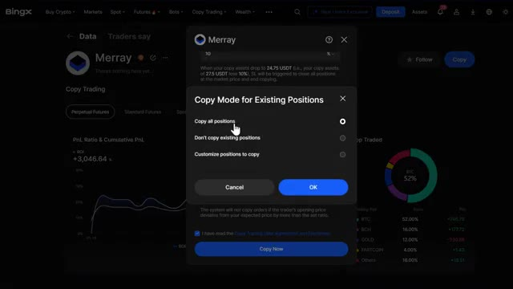
🔍 Agrandirpositions existantes afin que vous puissiez voir comment le trader opère avant de vous engager dans ses trades actuels. Tolérance au slippage. Ceci contrôle quelle différence de prix vous acceptez entre le prix d'entrée du trader et le vôtre. Vous pouvez la régler de zéro slippage, prix exact, mais avec plus de chance d'échec de l'ordre, jusqu'au slippage maximum, plus flexible, mais vous pourriez obtenir un pire prix d'entrée. Je recommande de la régler entre 1 et 2 % pour un bon équilibre entre l'exécution et la précision du prix. Ensuite, il y a le réglage de votre effet de levier. Ici, vous pouvez choisir d'utiliser le même effet de levier que le trader pour correspondre exactement à son effet de levier.
Interface & Outils : Échange de cryptomonnaies BingX (interface de Copy Trading).
Contenu textuel & Code : Fenêtre modale de paramétrage de copy trading ("More Settings"), affichant les options de gestion des positions existantes ("Don't copy existing positions"), les réglages de tolérance au slippage réglés sur un pourcentage maximal (1 %), ainsi que la case de validation des conditions d'utilisation et le bouton d'exécution ("Copy Now").
Action / Démonstration : Configuration des options avancées de copy trading et de la tolérance au slippage avant de valider l'engagement sur le trader.
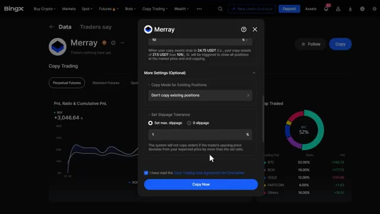
🔍 Agrandirou définissez votre propre effet de levier en utilisant un montant de levier personnalisé. Si le trader utilise un effet de levier de 20 fois, mais que ce risque ne vous met pas à l'aise, vous pouvez définir le vôtre à 5 fois ou 10 fois. Cela réduit votre profit potentiel, mais réduit également votre risque de liquidation. Sur les paires de trading, vous pouvez choisir de copier toutes les paires de trading.
Interface & Outils : Interface de l'échange de cryptomonnaies BingX (section Copy Trading).
Contenu textuel & Code : Paramètres de levier : option "Same as the trader" et option personnalisée ("Customize leverage") réglée sur un effet de levier de 10x avec un curseur allant de 1x à 150x.
Action / Démonstration : Configuration manuelle et personnalisation du niveau de levier pour le copy trading afin de limiter les risques.
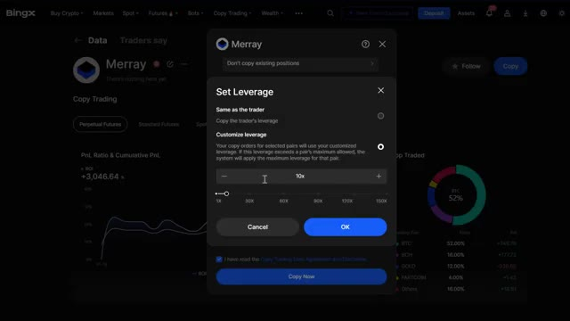
🔍 AgrandirCela suit chaque trade que le trader effectue sur toutes les cryptomonnaies. Vous pouvez également sélectionner uniquement des paires spécifiques, où vous ne copiez les trades que sur vos paires sélectionnées. Je recommande de commencer uniquement avec les paires majeures comme le BTC et l'ETH jusqu'à ce que vous soyez à l'aise avec le fonctionnement du copy trading. Si vous voulez copier des traders sur le marché au comptant, le processus est plus simple.
Interface & Outils : Plateforme d'échange de cryptomonnaies BingX (interface de Copy Trading).
Contenu textuel & Code : Options de configuration des paires de trading : "Same as the trader" (sélectionné par défaut) et "Customize trading pairs" pour filtrer manuellement les cryptomonnaies copiées.
Action / Démonstration : Sélection des paramètres de paires de trading pour le copy trading d'un trader spécifique ("Marray").
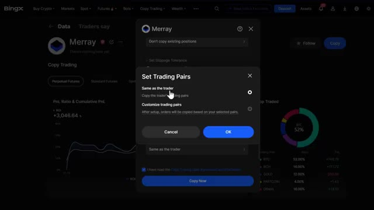
🔍 AgrandirVous pouvez seulement copier par ordre, où vous définissez votre marge par ordre, le montant fixe que vous investirez dans chaque transaction effectuée par le trader. Par exemple, si vous définissez 50 dollars par ordre, chaque fois que le trader achète une cryptomonnaie, vous achèterez également pour 50 dollars de cette même pièce. Étant donné que le trading au comptant n'utilise pas d'effet de levier, il n'y a aucun risque de liquidation.
Interface & Outils : Interface de la plateforme d'échange de cryptomonnaies BingX (section Copy Trading).
Contenu textuel & Code : Paramètre de copie "Per Order", champ de saisie de la marge fixé à 5 USDT, solde disponible du compte (9.8778 USDT), et bouton de validation "Copy Now".
Action / Démonstration : Configuration et illustration de la méthode de copie par ordre avec définition du montant de marge fixe investi par transaction.
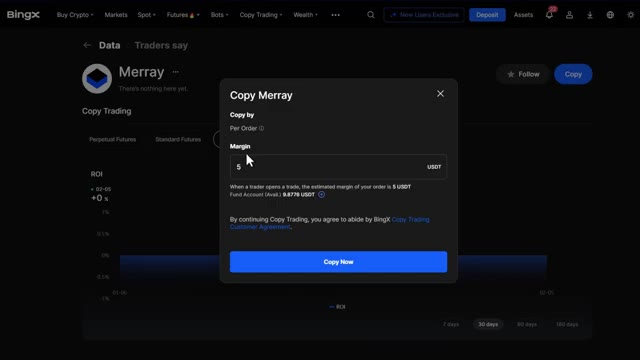
🔍 Agrandirce qui le rend beaucoup plus sûr pour les débutants. Une fois que tout est configuré, vérifiez tous vos paramètres une dernière fois. Cochez le formulaire d'accord et acceptez les conditions. Cliquez sur copier maintenant. Confirmez votre copy trading et boum, votre copy trading est désormais actif. Vous commencerez à copier automatiquement les positions de ce trader en fonction des paramètres que vous avez configurés. Maintenant écoutez, le copy trading n'est pas complètement passif. Vous devez surveiller vos positions régulièrement. Allez sur le tableau de bord du copy trading et cliquez sur votre profil pour tout gérer. Ici, vous pouvez voir tous vos copy trades actifs. Cela montre quels traders vous
Interface & Outils : Plateforme d'échange de cryptomonnaies BingX (section Copy Trading).
Contenu textuel & Code : Paramètres de configuration du copy trading (tolérance de slippage, effet de levier 1X, paires de trading, montant de 20.00 USDT).
Action / Démonstration : Finalisation de la configuration et activation du copy trading sur un trader sélectionné.
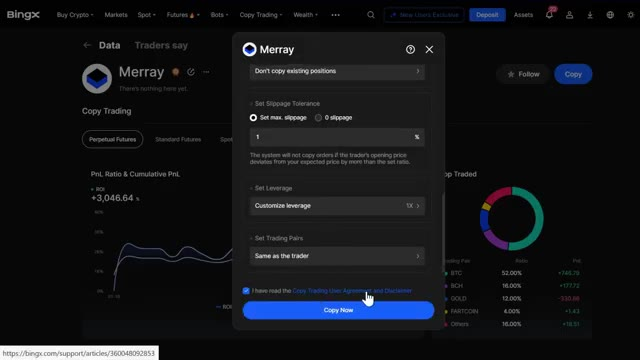
🔍 Agrandir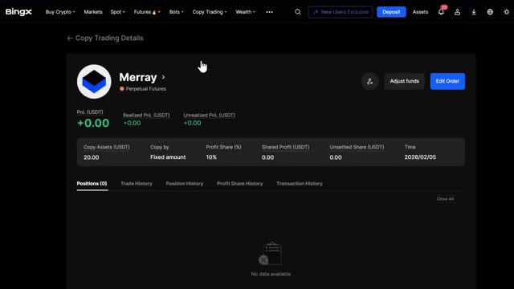
🔍 Agrandircopie, en quelque sorte mode copie, partage des profits, positions, PNL réalisé. Ce sont les profits ou pertes des trades clôturés et le PNL non réalisé dans lequel vos profits ou pertes sont basés sur une position ouverte. Sur l'onglet du trader, vous pouvez modifier l'ordre en ajustant votre montant d'investissement, le stop loss ou le take profit à tout moment. Ajustez les fonds en ajoutant ou en réduisant la marge, et vous pouvez également ne plus suivre un trader dans tous ses trades si ses performances baissent. Je recommande de vérifier vos trades copiés au moins une fois par jour, surtout dans des conditions de marché volatiles. Si vous voyez la stratégie d'un trader
Interface & Outils : Exchange de cryptomonnaies BingX (section Copy Trading Details)
Contenu textuel & Code : PnL total (+0.00 USDT), Realized PnL (+0.00), Unrealized PnL (+0.00), Copy Assets (20.00 USDT), Copy by (Fixed amount), Profit Share (10%), Shared Profit (0.00), Time (2026/02/05), onglets Positions (0), Trade History, Position History, Profit Share History, Transaction History.
Action / Démonstration : Présentation et explication des paramètres de copy trading, du PnL réalisé et non réalisé, ainsi que des options de modification des ordres et d'ajustement des fonds.
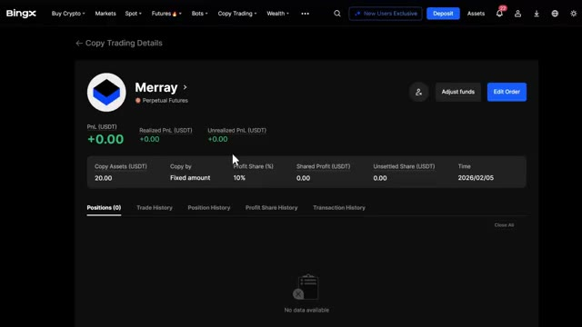
🔍 Agrandiren train de changer, que leur prélèvement augmente de manière significative ou que les gains de leur copieur deviennent négatifs, n'ayez pas peur d'arrêter de les copier et de trouver quelqu'un d'autre. Très bien, voilà donc l'analyse complète du copy trading sur BingX. Le copy trading est un excellent moyen de se lancer dans la crypto sans être un expert des graphiques. Mais ce n'est certainement pas un revenu passif. Vous devez surveiller vos traders, gérer vos risques et ne jamais investir plus que ce que vous pouvez vous permettre de perdre. Avant de partir, n'oubliez pas d'utiliser mon lien dans la description pour réclamer mon pack de bonus de bienvenue exclusif sur BingX. Si vous avez des
Interface & Outils : Interface web de l'échange de cryptomonnaies BingX (section Copy Trading).
Contenu textuel & Code : Liste de traders affichant des statistiques de performance telles que le PnL sur 30 jours (ex: +805.10%, +790.58%, +590.03%), le ratio de Sharpe, le drawdown maximum et des graphiques de tendance de profit.
Action / Démonstration : Présentation et analyse visuelle des différents traders à copier sur la plateforme.
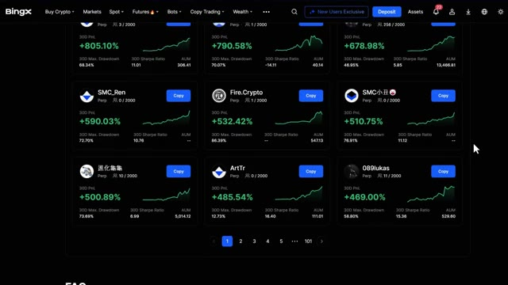
🔍 Agrandirquestions, posez-les dans les commentaires ci-dessous. Si cette vidéo vous a aidé, n'oubliez pas de l'aimer et de vous abonner pour plus de tutoriels sur la crypto. Pour une visite guidée plus détaillée de la plateforme Bing X, consultez la vidéo qui apparaît sur votre écran maintenant, et je vous vois dans la prochaine.
Interface & Outils : Plateforme d'échange de cryptomonnaies BingX (section Copy Trading).
Contenu textuel & Code : Liste de profils de traders affichant divers indicateurs de performance : taux de réussite (Win Ratio), PnL cumulé (Cumulative PnL), pourcentage de profit et nombre de jours de copy trading.
Action / Démonstration : Navigation et présentation des différents traders disponibles pour le copy trading sur la plateforme BingX.
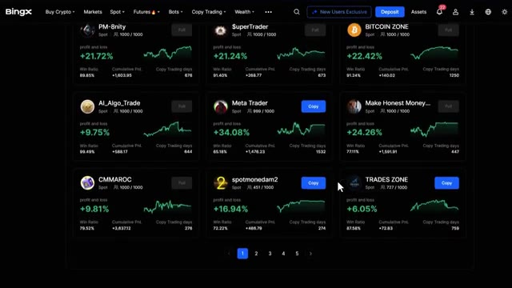
🔍 Agrandir